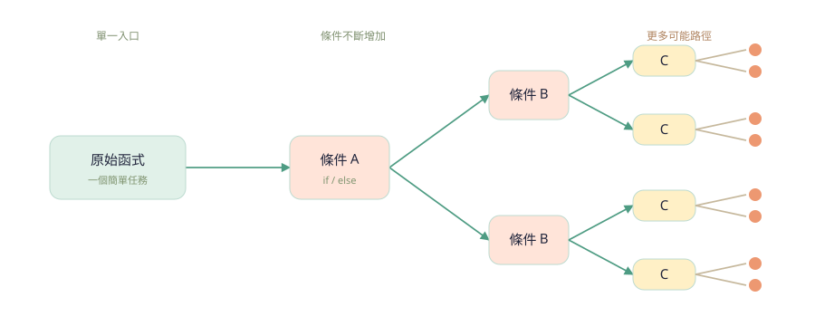
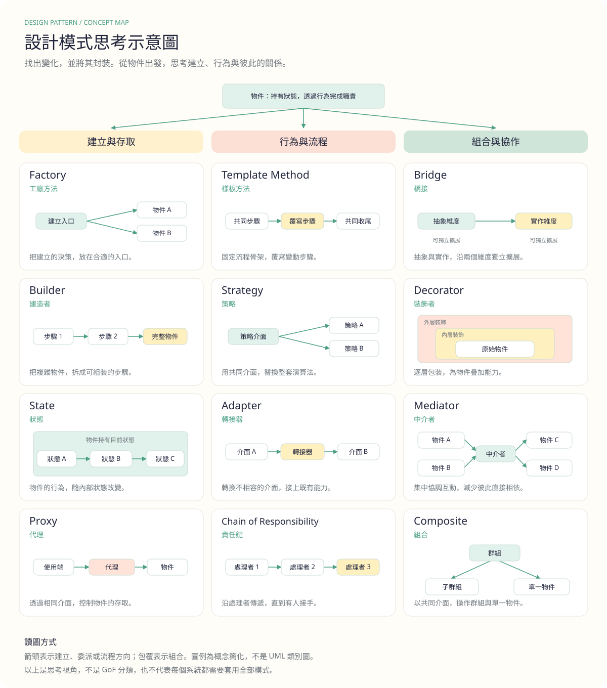
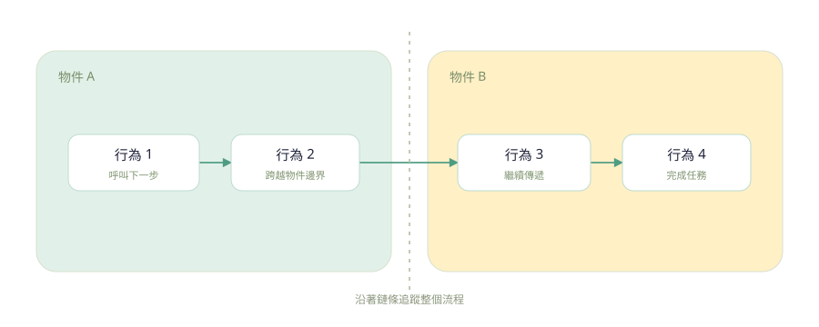

物件 Object
承擔職責的個體，擁有狀態並提供行為。
例如：一位使用者THINK IN OBJECTS. DESIGN FOR CHANGE.
設計模式是思考的工具。從物件、行為到彼此的關係，
一起探索如何寫出更容易理解、也更容易改變的程式。
先理解問題，再選擇模式。這份筆記從個人經驗出發，提供審視程式的思考起點。
原則與模式都有適合的情境；好的設計，來自理解後的取捨。
THE LEARNING PATH
程式不只是給電腦的指令，
也是工程師之間的交流。
從物件、行為與資料，
理解封裝、多型與繼承。
用五個原則審視設計，
也保留面對情境的彈性。
分開 Why、What 與 How，
讓程式傳達背後的意圖。
從需求的變化出發，
找到合適的模式與協作方式。
把注意力留給重要的事，
練習寫出給人看的程式。
寫程式要優先給人看，然後才是電腦。
這份筆記的出發點CODE AS COMMUNICATION
把程式語言，看成工程師之間的交流媒介。
程式語言能讓我們向電腦發出明確指令，但軟體工程處理的是現實的問題。當另一位工程師接手，程式也需要告訴他：這個系統正在解決什麼。
就像日常對話會選擇容易理解的表達，程式也值得用清晰的命名與結構來溝通。可讀性，正是 Clean Code 關心的事情。
OBJECTS, BEHAVIORS & DATA
先分清楚「是什麼」、「做什麼」與「現在的狀態」。
類別建立物件，方法表達行為，資料描述狀態。若把現實物件的所有行為都塞進同一個類別，它容易長得太大；透過拆分與組合，讓各個職責有清楚的邊界。
承擔職責的個體，擁有狀態並提供行為。
例如：一位使用者由動作與流程組成，表達物件能做什麼。
例如：提交一份申請描述屬性與狀態，識別個體之間的差異。
例如：姓名、申請狀態隱藏實作細節，只露出需要的概念。可以從物件、行為與資料三個面向，思考哪些細節應該留在邊界內。
相同的介面可以有不同實作。呼叫者表達「做什麼」，具體物件決定「怎麼做」，讓替換行為更容易。
延伸既有類別，重用共同的定義與行為。繼承也會建立依賴；只有當子類別確實能遵守父類別的契約時，這個關係才合理。
PRINCIPLES, WITH CONTEXT
原則提供判斷的方向，情境決定如何運用。
先問「這個設計讓哪一種變更更容易？」再決定要引入多少抽象。以下將原文的生活比喻轉成設計提問；比喻是理解的起點，不是軟體契約的反例。
WHY → WHAT → HOW
讓不同層次，各自說清楚一件事。
背景、限制與取捨。程式不容易自行交代的理由，值得用註解保留下來。
用有意義的方法名稱封裝細節，讓讀者先看懂整體流程。
在實作內呈現運算與操作，需要理解細節時再往下閱讀。
// WHY：外部服務偶爾不穩定，
// 暫時保留重試機會。
function submitWithRetry() {
// WHAT：方法名稱表達目的
return retry(submitRequest, {
// HOW：重試的具體設定
attempts: 3
});
}概念片段，用來觀察表達層次。
PATTERNS FOLLOW CHANGE
找出變化，並將其封裝。
功能不斷增加，流程可能逐漸成為難以理解的「大泥球」。模式提供共同的設計語彙，幫助我們抽象細節、降低認知複雜度與重用程式。每個模式都有代價，先看問題，再選工具。
FIG. 02 / BRANCHING

目的不是消滅所有 if-else，而是在合適的層次選擇流程，讓細節專注自己的步驟。Factory、Strategy、State、Bridge 或 Template Method 都可能有幫助，取決於變化的位置。
THE BIG PICTURE / CONCEPT MAP

FIG. 03 / A DESIGN THAT EVOLVES
假設我們正在做讀書會的閱讀統計報表。一開始只顯示個人的閱讀本數，後來才陸續增加報表種類、統計方式與輸出格式。下面每一站，都從一個具體的新需求開始。
這六站是同一功能可能遇到的變化，不是模式的升級順序。每張圖只聚焦當次調整，省略已介紹的部分；不需要把所有模式都套進系統。尤其第 4 站抽出的是統計演算法，第 5 站拆開的是報表種類與輸出實作，解決的問題不同。
THE PATTERN LIBRARY
沒有符合的模式。試試「行為」、「工廠」或清除搜尋。
FIG. 04–06 / RELATIONSHIPS

DESIGN FOR THE READER
讀者的注意力有限，把它留給真正重要的事。
好閱讀的程式和好文章一樣，需要合適的詞彙、連貫的結構與恰到好處的細節。以原筆記的六個角度，重新檢查一段你熟悉的程式。
使用特殊演算法時，提供足夠背景，讓接手的人理解用途。
使用團隊與領域中一致的詞彙，減少猜測名稱的時間。
避免過度抽象與跳轉，讓讀者看得出行為如何連接。
先呈現主要流程，再讓細節落在適合的位置。
在上下文分散的地方，補充使用時機、原因與限制。
移除失效註解與過時程式，讓重要訊息保持清楚。
A PRACTICE, NOT A DESTINATION
多讀不同風格的程式，體會它們好懂與難懂的地方，再練習表達自己的理解。像在讀書會分享一本書，在有限篇幅內說出概念，會幫助我們練習組織程式。